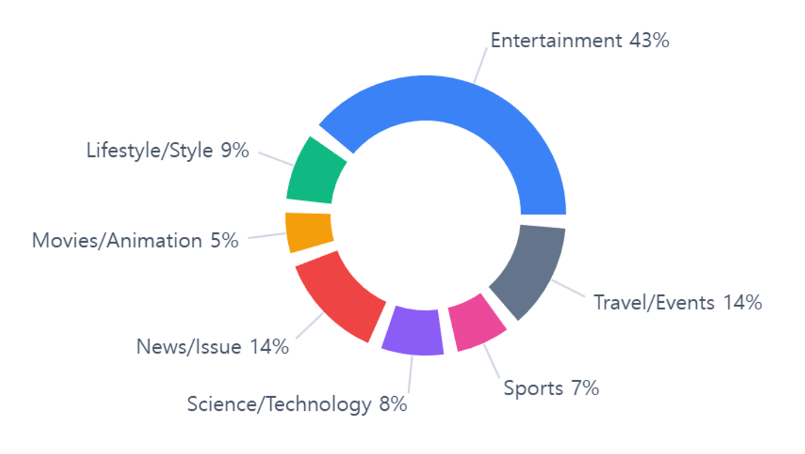
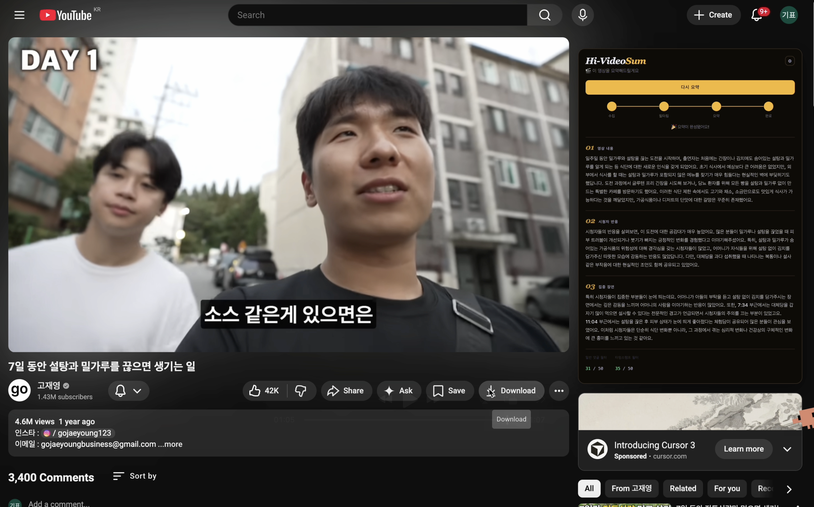

Meet Hi-VideoSum.
A user-centric, resource-efficient sLLM-based Korean YouTube video summarization and highlight service.

A user-centric, resource-efficient sLLM-based Korean YouTube video summarization and highlight service.
As short-form consumption becomes the norm, viewers expect summaries that surface not only what a video is about, but how other people reacted to it.
Video summarization can no longer remain at the level of "content compression"; it must evolve into a part of the user experience that conveys the social cues people rely on when deciding whether to watch.
Hi-VideoSum builds a resource-efficient, sLLM-based summarization service that never touches video frames. It operates purely on two text signals from Korean YouTube — transcripts and viewer comments. We curate a ~10k-sample dataset spanning 7 categories and ~80 channels, select high-quality comments via an LLM-based three-axis evaluation (informativeness · subjectivity · relevance), and fine-tune an sLLM that produces a three-paragraph prose summary covering video content, viewer reactions, and standout moments.
Operating on only two text signals — transcripts and comments — dramatically lowers compute and serving cost while sidestepping the hallucination risk of video-multimodal stacks.
General comments recover collective sentiment; timestamped comments recover standout moments. The output goes beyond compression to deliver social cues.
¶1 from transcript, ¶2 from general comments, ¶3 from timestamped comments. Source mixing is forbidden at the system-prompt level.
500–1,000 characters of friendly prose — no section headers, no bullets. Each paragraph is drawn from one source only.
¶ CONTENT The video walks through a minimal urban camping setup. The host lays out a tent, table, and cooking gear that all fit into a single car, and explains the weight, packing, and price criteria that drove each pick. The second half follows the actual setup and a few wrap-up tips, building a flow that beginners can replicate end-to-end.
¶ REACTION Viewers most often praised the host for being upfront about gear choices, and especially for listing weight and bulk alongside each item. Many called the price points reasonable, and a recurring request was a follow-up on winter setups. The calm, non-promotional tone also drew repeated mention.
¶ HIGHLIGHTS Around 3:24, the tent-pitching cut drew reactions like "no way this is really one minute," and near 7:10 viewers kept asking to re-watch the chair comparison. The late-video 11:48 night-scene setup pulled the most "where is this location?" replies — a clear signal of which moment held attention the longest.
From channel curation through two filtering passes to prose label generation, resource-efficient LoRA training, and finally a web & extension deployment.
~80 Korean YouTube channels hand-curated to balance 7 top-level categories and 16 sub-categories.
Videos 5–30 min, up to 300 per channel. Ordered by comment count; transcripts and general + timestamped comments are collected.
Regex separates timestamped comments. A meaningful-character ratio drops noise immediately at collection time.
Informativeness, subjectivity, relevance scored 1–3. Only comments with total ≥ 6 pass. Same prompt across all judges.
500–1,000 chars, three paragraphs, friendly tone. Per-paragraph source isolation suppresses hallucination at the prompt level.
A lightweight baseline validates the full pipeline first, then we scale up to larger Korean sLLMs.
Sourced entirely from Korean YouTube. Each video becomes one JSONL row carrying transcript, general comments, and timestamped comments. Released as kim586w/hivideosum_training_dataset.

FastAPI handles intake and polling only; the actual pipeline runs asynchronously inside an arq worker. The two never talk directly — Redis is the mailbox between them.
Intake, status polling, and result delivery only. Does no real work itself.
Pulls jobs from the queue and runs the collect → filter → summarize pipeline asynchronously.
Queue + progress hash + result/cache strings. A video_id-keyed cache returns repeats instantly.
Serves prose summaries via an OpenAI-compatible API using our fine-tuned LoRA adapter.
Three-axis comment scoring (informativeness · subjectivity · relevance). gemini-3-flash-preview.
yt-dlp · youtube-transcript-api · youtube-comment-downloader, routed via Webshare proxy.

Please use the entry below to cite this work. A separate dataset citation will be added soon.